The idea behind the stalker spline in package chebpol is outlined. It was originally designed as a one-dimensional interpolation to be almost shape preserving in the sense that it attempts to honour monotonicity properties and local extreme points in the data, though not entirely. There is no fancy theory behind, but it once served a purpose for the author, and here it is. Indeed, it can probably be phrased in terms of NURBS, wavelets or some such theory, but I am not in need of a certificate of completed apprenticeship (a.k.a. ph.d), and am free to phrase it with elementary calculus. In line with the policy of chebpol there are also multidimensional versions.
The monotonicity is achieved by somewhat non-traditional means, by sacrificing analyticity, and in a corner case even differentiability. That is, the derivative is not well behaved. The name comes from the fact that it follows the data frighteningly close, though it sometimes seems stupid with little foresight. An alternative name could be wet paper spline. The interpolation isn’t a proper spline, since it is not a polynomial. We also obtain a limit in intuitive geometric terms on how large the overshoot can be. The stalker spline can be used when more smoothness than multilinear is required, but is not a replacement for more conventional smooth splines like the thin plate spline or Floater-Hormann.
Introduction
The multilinear interpolation in chebpol is easy to understand. We have some points on the \(x\)-axis. At every point we have a value, and we just draw straight lines between the “knots”:
There is another way to think about this, we can imagine that at each knot \(i\) there lives a function \(f_i(x)\). Whenever we are between two knots, the interpolated value is a convex combination (a weighted average) of the two functions at each side. Say we are in \(x=3.3\). We should have a part of \(f_3(3.3)\), and a part of \(f_4(3.3)\). Since our point is closest to \(3\), we should have more of \(f_3\) than of \(f_4\). We use a linear weight, i.e. we have \(4-3.3=0.7\) of \(f_3\), and \(1-(4-3.3)=0.3\) of \(f_4\). So the value is \(0.7f_3(3.3) + 0.3f_4(3.3)\), or more generally for \(3 \leq x \leq 4\), \(t f_3(x) + (1-t)f_4(x)\) where \(0 \leq t=4-x \leq 1\). In the multilinear case, all the functions are constant, and equal to the value in the point where it lives.
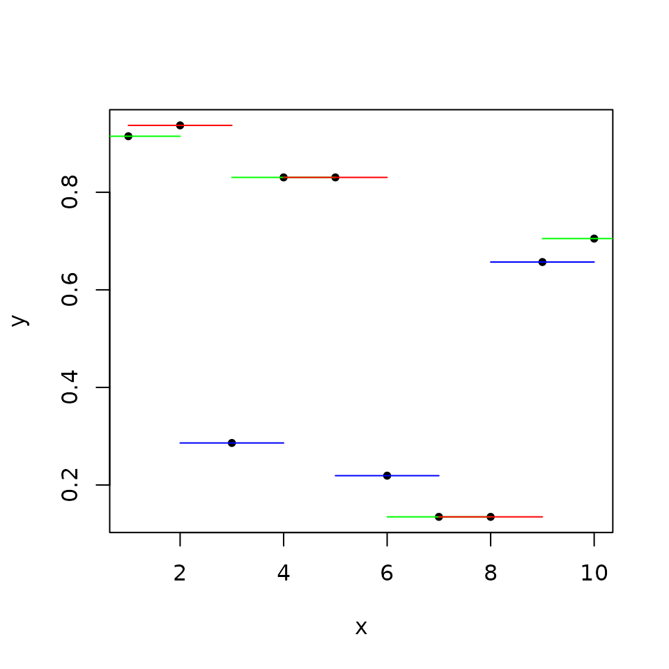
When we make a convex combination of two constant values \(v_i\) and \(v_{i+1}\), we obtain a straight line: \(t v_i + (1-t) v_{i+1}\). This piecewise linear interpolation is faithful to the data in the sense that it honours local extrema as well as monotonicity.
In the stalker spline we replace these constant functions with non-constant functions. I.e. the function \(f_i(x)\) should not be constant, but pass through the 3 knots \(i-1, i\) and \(i+1\). An obvious method is to let \(f_i\) be the unique quadratic which passes through the three knots.
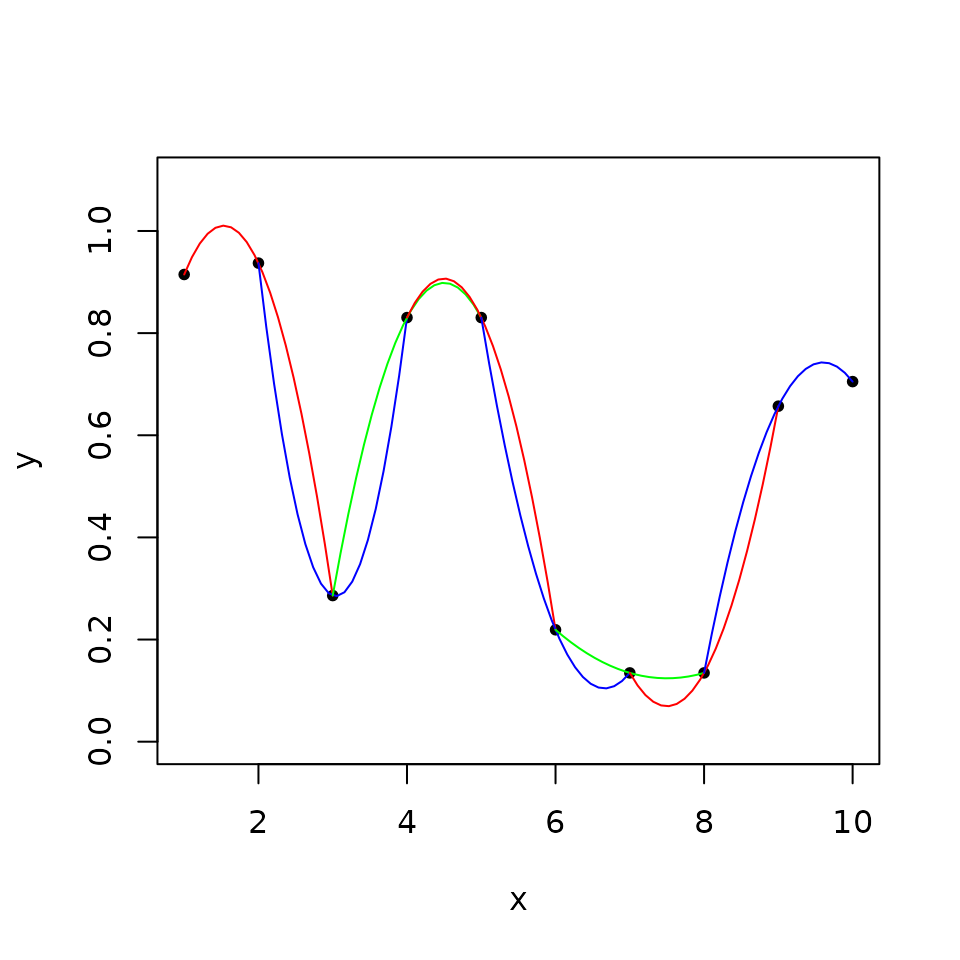
Whenever we are between two knots, there are two functions living there, one on each side. The interpolated value between two knots is still a convex combination of the two functions. The result is that the interpolant between any two points is a cubic, with a value between the two functions living there.
In the random points we have chosen, we have deliberately made the fourth and fifth points equal. The 7th and 8th differ by only 0.00001. This accentuates a phenomenon which in some cases can be a problem, no polynomial (actually, no analytic function) except for the constant can be constant on an interval. There is “overshoot” between knots 4 and 5. Indeed, many of the functions overshoot, like between 7 and 8.
The idea behind the stalker spline is to reduce the overshoot, this
is achieved by ensuring that if the knots \(i-1, i\) and \(i+1\) are monotonic (either increasing or
decreasing), then the function \(f_i(x)\) will also be monotonic. Other
splines, like the Fritsch-Carlson spline in
splinefun(..., method = "monoH.FC") also does something
similar, though with proper polynomial splines. We achieve this by
non-traditionally using a fractional degree, i.e. a function of the form
\(a + bx + c|x|^r\), with \(1\leq r \leq 2\). The idea is that if three
monotonic points are such that they can’t be connected with a quadratic
without the quadratic being non-monotonic, we modify it by lowering the
degree.
We will also consider another parametrized function family of the form
\[\begin{equation*} a + bx + \frac{d}{1+cx}. \end{equation*}\]
I.e. we replace the fractional degree term with a hyperbola. These functions can also be tailored to be monotonic on three points, or with a local extreme point in the middle.
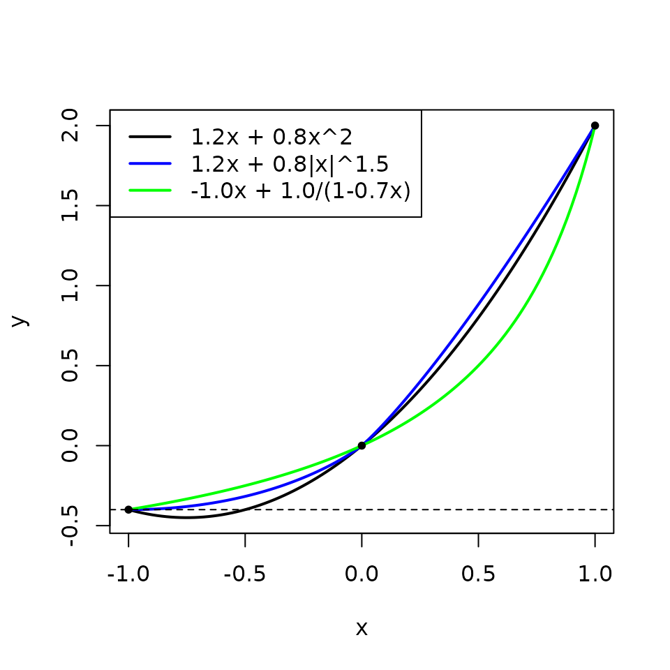
In this note we call these functions defined by three points and a monotonicity constraint, basis functions. They are not basis functions in the vector space sense; they are not glued together by scalar weights, but by linear or sigmoid functions. We start out with the variable degree stalker in one dimension on a uniform unit grid, to get a feel for it without too much notation. Then we take the more general case of \(n\) dimensions on non-uniform grids, for both the variable degree and hyperbolic case.
The stalker spline
To simplify, we consider a basis function \(f(x)\) on the interval \([-1,1]\). With a uniform grid we can always scale and translate \(x\) to have this situation. We have function values in the three knots \(f(-1) = v_-\), \(f(0) = v_0\), and \(f(1) = v_+\). We assume,
\[\begin{equation*} f(x) = a + bx + c|x|^r, \end{equation*}\]
and must figure out the four parameters \(a,b,c\), and \(r\). Inserting our three points, we obtain three equations with three unknowns (the \(r\) disappears because we have cleverly chosen our grid points to be \(-1\) and \(1\)):
\[\begin{equation}\tag{1} \begin{aligned} &a - b + c &= v_-,\\ &a &= v_0,\\ &a + b + c &= v_+.\\ \end{aligned} \end{equation}\]
The solution is
\[\begin{equation}\tag{2} \begin{aligned} a &= v_0,\\ b &= \frac12 (v_+-v_-),\\ c &= \frac12 (v_+ + v_-) - v_0.\\ \end{aligned} \end{equation}\]
These coefficients will work with any \(r\). Typically we would like to pick \(r = 2\), but this may destroy monotonicity. The three knots are monotonic (either increasing or decreasing) whenever \(|c| < |b|\). This can be seen from equation (1). Monotonicity occurs when \(v_+ - v_0 = b+c\) has the same sign as \(v_0 - v_- = b-c\), which is precisely when \(|c| < |b|\).
If this is the case we will use monotonicity to find a suitable \(r\). To be specific, we have
\[\begin{equation}\tag{3} f'(x) = b + cr|x|^{r-1}\operatorname{sgn}(x), \end{equation}\]
where \(\operatorname{sgn}(x)\) is the sign function. We have a critical point \(f'(x) = 0\) for \(|x|^{r-1}\operatorname{sgn}(x) = -b/(cr)\). This equation has a solution in \(-1 < x < 1\) if \(|b| < r|c|\), i.e. if the right hand side has absolute value less than 1. We pick an \(r\) so that the critical point disappears from the interior. More specifically, if \(r=2\) results in non-monotonicity, i.e. if \(|b| < 2|c|\), we pick the largest \(r\) which will make \(f(x)\) monotonic. That is, \(r = |b/c| < 2\), this will relegate the critical point to one of the end points. Since \(|c| < |b|\), we also have \(r > 1\).
The same exercise with a non-uniform grid results in a non-linear equation in \(r\) which is solved numerically by chebpol. We come back to this later, when we consider the more general case in higher dimensions.
There are some special cases. What if \(c=0\)? This only happens when the knots are collinear, i.e. on a straight line, but then \(r\) is irrelevant, so we do not need to compute it. What about the corner case \(|b|=|c|\)? This happens if \(v_0\) equals either \(v_-\) or \(v_+\), i.e. if we have a horizontal region. In this special case, \(r=1\), and we have a non-differentiable \(f(x) = a + b(x \pm |x|)\), which is constant on one side of 0 and linear on the other.
At the outset, we only need to adjust \(r\) away from 2 when there is monotonicity which is violated by a quadratic, i.e. when \(|c| < |b| < 2|c|\). If we stick strictly to this idea, it means that as soon as \(|b| < |c|\), we will change the degree \(r\) from 1 to 2 in a jump. That is, for \(|b|=|c|\) we have a constant/linear function, but if \(|b|\) decreases ever so little, \(|b| = |c| - \epsilon\), we suddenly shift to a quadratic which may have considerable overshoot. To make this transition smoother, we (somewhat arbitrarily) set \(r = |c/b|\) whenever \(|c/2| < |b| < |c|\), i.e. we gradually creep back to \(r=2\).
In Figure 1 is a plot of some of the functions for the case \(v_-=0\), \(v_+=1\), with varying \(v_0\) (the black dots).
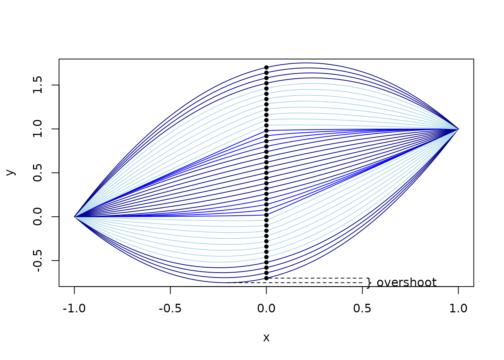
Figure 1: Basis functions
The dark blue curves are quadratic. The blue curves are monotonic, but with lowered degree. The light blue curves are non-monotonic with lowered degree. Every function except for the two obvious ones are continuously differentiable, but not twice differentiable in \(0\). If we let \(|v_0|\) grow further, the function will stay quadratic, and the extreme point and the overshoot will converge to 0. Ideally, the non-monotonic curves should have an extreme point in \(x=0\), i.e. no overshoot, but that is impossible with this function form.
If either \(v_-\) or \(v_+\) grows, \(|b/c|\) converges to 1, so we will converge to the non-differentiable case. This dynamic can be seen in Figure 2.
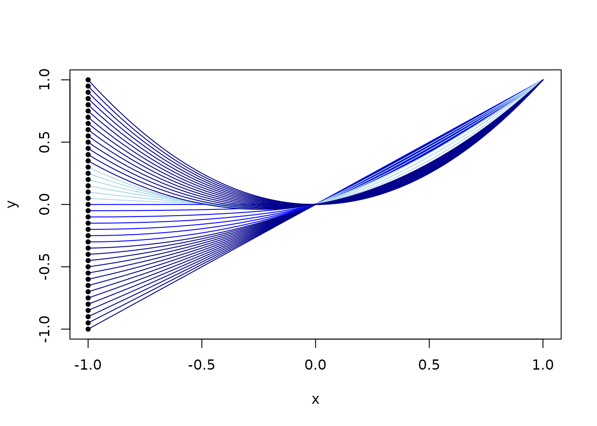
Figure 2: Basis functions
Overshoot and blending
To sum up, the function passing through \((-1,v_-)\), \((0,v_0)\) and \((1,v_+)\) is
\[\begin{equation*} f(x) = a + bx + c|x|^r. \end{equation*}\]
The coefficients \(a\), \(b\), and \(c\) are as in (2). For \(c\neq 0\) the exponent \(r\) is chosen as follows:
\[\begin{equation}\tag{4} r = \begin{cases} |b/c| &\text{for \(|c| \leq |b| < 2|c|\)},\\ |c/b| & \text{for \(|b| < |c| < 2|b|\)},\\ 2 & \text{otherwise}. \end{cases} \end{equation}\]
It is clear that \(1 \leq r \leq 2\). The functions with \(1 < r \leq 2\) are everywhere differentiable, but for \(r < 2\) the second derivative is unbounded near 0, so the graph may turn arbitrarily abruptly in the knots.
We define the overshoot as 0 for monotonic knots, and as \(|v_0 - f(x_0)|\) where \(x_0\) is the critical point of the function: \(f'(x_0) = 0\). From equation (3) we have by elementary calculus \(x_0 = -\operatorname{sgn}(bc)|b/(rc)|^{1/(r-1)}\). If \(|b| \geq r|c|\) then \(x_0 \notin (-1,1)\), hence the min/max occurs in an end point, in which case it is not an overshoot. We look at the case \(|b| < r|c|\).
For \(r=2\) we must by definition have \(|c| \geq 2|b|\). We have \(x_0 = -b/(2c)\). The function value in \(- b/(2c)\) is \(a-b^2/(4c)\), the vertical distance from the point \(v_0=a\) is \(d = |b^2/(4c)| \leq |b|/8\). Now, \(|b|\) is half the distance between \(v_+\) and \(v_-\), so the overshoot will always be smaller than \(|v_+ - v_-|/16\) for \(r=2\).
For \(r < 2\), \(r\) is either equal to \(|b/c|\), in which case there is no overshoot, or \(r=|c/b|\) when \(|c/2| < |b| < |c|\). We have \(x_0 = -\operatorname{sgn}(bc) |b/(rc)|^{1/(r-1)} = -\operatorname{sgn}(bc)r^{2/(1-r)}.\)
The function value in the extreme point \(x_0\) is then \(a - |b| \operatorname{sgn}(c) r^{2/(1-r)} + cr^{2r/(1-r)}\). The distance to \(v_0=a\) is \(d_r = \left| |c| r^{2r/(1-r)} - |b| r^{2/(1-r)} \right| = |b| \left| r^{(1+r)/(1-r)} - r^{2/(1-r)}\right|\). Again, it is easy to show by elementary calculus that \(d_r\) is increasing in \(r\), so \(d_r \leq |b|/8\).
We can prove more. If we have \(|b| < |c|\) it means that \(v_0\) is the smallest or the largest of the three knots. To simplify we assume that \(v_0 < v_- < v_+\), i.e. that \(0 < b < c < 2b\). The situation is symmetric with the direction reversed. We have that \(c-b = v_- - v_0\), the amount that the middle knot is below the next lowest knot. We also have \(c-b = b(r-1)\). If we compute the overshoot as a fraction of this “knot overshoot”: \(d_r/(c-b) = d_r/(b(r-1))\), again we get \(d_r/(v_- - v_0) =| r^{(1+r)/(1-r)} - r^{2/(1-r)} |/(r-1) \leq e^{-2} \approx 0.135\).
In short, the overshoot is always less than 14% of the vertical distance from the lowest/highest knot to the next lowest/highest knot.
Blending
There is a basis function in every knot, so we glue the functions \(f_0\) and \(f_1\) together as a convex combination \(tf_0(x) + (1-t)f_1(x)\). We use a linear blender, \(t = 1 - x\) (assuming \(f_0\) lives in 0 and \(f_1\) lives in 1). If we like, we can take a closer look at the actual blended function, i.e. \(g(x) = (1-x)f_0(x) + x f_1(x)\). It is possible to write it out by inserting expressions for \(f_0(x)\) and \(f_1(x)\) and analyze it closer. We must then remember that our exposition above assumes that the \(x\) is shifted so that each function is centred in \(0\). For the hyperbolic bases we end up with a rational function with two poles outside \([0,1]\), for the fractional degree stalker we end up with a sum of fractional degree functions.
We can also modify the \(t\) with a
sigmoid blender like \(t\in [0,1/2] \mapsto
\exp(2-1/t)/2\) and \(t\in (1/2,1]
\mapsto 1-\exp(2-1/(1-t))/2.\) A cubic blender is also available.
These can be selected by the argument blend = "linear",
blend = "sigmoid", or blend = "cubic" to the
stalker interpolant. The blending functions are shown in Figure 3.
linear <- function(t) t
cubic <- function(t) -2 * t^3 + 3 * t^2
sigmoid <- function(t) ifelse(t < 0.5, 0.5 * exp(2 - 1 / t), 1 - 0.5 * exp(2 - 1 / (1 - t)))
parodic <- function(t) ifelse(t < 0.5, 0.5 * exp(4 - 1 / t^2), 1 - 0.5 * exp(4 - 1 / (1 - t)^2))
square <- function(t) ifelse(t < 0.5, 0, 1)
s <- seq(0, 1, length = 100)
plot(s, sigmoid(s), typ = "l", ylab = "y")
lines(s, linear(s), col = "blue")
lines(s, cubic(s), col = "green")
lines(s, parodic(s), col = "red")
lines(s, square(s), col = "cyan")
legend(
"topleft",
legend = c("linear", "cubic", "sigmoid", "parodic", "square"),
col = c("blue", "green", "black", "red", "cyan"),
lty = 1
)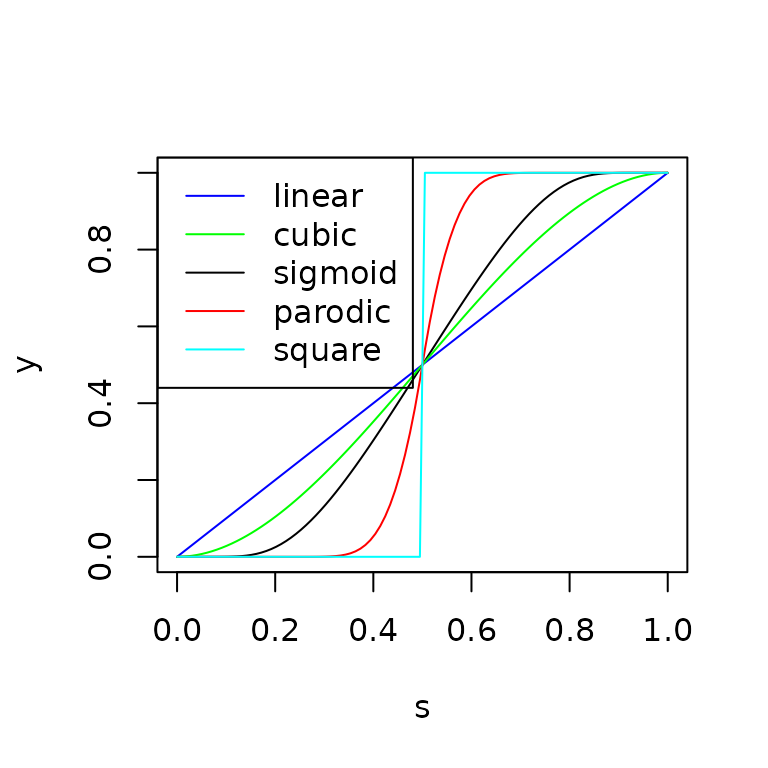
Figure 3: Blending functions
Multidimensional stalker
We consider the stalker in higher dimensions, specifically \(\mathbb{R}^n\). We have a Cartesian product grid, and in every grid point there should live a function. We will try to honor monotonicity and extreme points along the axes. That is, we do not consider the grid to be just any points which happen to lie on a grid, as a radial basis function approach would do, but as defining for monotonicity and local extreme points. Thus, the resulting spline will typically preserve features parallel with the axes. We consider the function living in the point \((0,\ldots,0)\). The grids may be different in each dimension, but we call the three grid points along dimension \(i\): \(k_i^-\), \(0\), and \(k_i^+\). That is, we have \(k_i^- < 0 < k_i^+\). We also transform the function values to be zero based, i.e. the value in 0 is 0. The function values (with all arguments in other dimensions equal to 0) are \(v_i^-\), \(0\), and \(v_i^+\). Thus, the triple is increasing if \(v_i^+ > 0\), it is convex if \(v_i^+ k_i^- - v_i^- k_i^+ < 0\).
The function form we choose as a “basis” (with \(x=(x_1,x_2,\ldots,x_n)\)) is,
\[\begin{equation}\tag{5} f(x) = \sum_{i=1}^n b_i x_i + \sum_{i=1}^n c_i |x_i|^{r_i} \end{equation}\]
The relation \(f(0) = 0\) is satisfied with this function form. For each \(i\) we also have equations for the two other grid points \(k_i^-\) and \(k_i^+\),
\[\begin{equation}\tag{6} \begin{aligned} v_i^+ &=b_i k_i^+ + c_i|k_i^+|^{r_i},\\ v_i^- &=b_i k_i^- + c_i|k_i^-|^{r_i} \end{aligned} \end{equation}\]
These can be solved for \(b_i\) and \(c_i\), with the determinant \(D = k_i^+ |k_i^-|^{r_i} - k_i^- |k_i^+|^{r_i}\):
\[\begin{equation}\tag{7} \begin{aligned} b_i &= \frac{v_i^+ |k_i^-|^{r_i} - v_i^- |k_i^+|^{r_i}}{D},\\ c_i &= \frac{k_i^+ v_i^- - k_i^- v_i^+}{D}\\ \end{aligned} \end{equation}\]
Note that we still have to find \(r_i\) since it occurs in the expressions for \(b_i\) and \(c_i\). We will use monotonicity or local extreme points for this purpose.
Monotonic points
If a triple is monotonic we will ensure that our function is monotonic. The derivative along dimension \(i\) is \(f_i'(x) = b_i + c_i r_i |x_i|^{r_i-1}\operatorname{sgn}{x_i}\). We ensure that it is not zero by letting \(1\leq r_i \leq 2\) be the largest number which keeps \(f_i'(x_i) \neq 0\) for \(k_i^- < x_i < k_i^+\). To be specific, the equation \(f_i'(x_i) = 0\) is
\[\begin{equation}\tag{8} |x_i|^{r_i-1} \operatorname{sgn}(x_i) = -\frac{b_i}{c_i r_i}. \end{equation}\]
We first check if \(r_i=2\) avoids a solution. In this case, equation (8) becomes
\[\begin{equation*} x_i = -\frac{b_i}{2c_i}. \end{equation*}\]
So we avoid a critical point if,
\[\begin{equation*} -\frac{b_i}{2c_i} \leq k_i^-\quad\text{or}\quad -\frac{b_i}{2c_i} \geq k_i^+. \end{equation*}\]
If we don’t have a critical point, it’s fine. If \(r_i=2\) does not work we must lower \(r_i\) so much that the critical point is in one of the end points. I.e. we lower \(r_i\) until,
\[\begin{equation*} b_i + c_i r_i |k_i^+|^{r_i-1} = 0 \quad\text{or}\quad b_i - c_i r_i |k_i^-|^{r_i-1} = 0. \end{equation*}\]
Using equations (7), we obtain,
\[\begin{equation*} \begin{aligned} v_i^+ |k_i^-|^{r_i} - v_i^- |k_i^+|^{r_i} &= -(k_i^+ v_i^- - k_i^- v_i^+) r_i |k_i^+|^{r_i-1},\\ v_i^+ |k_i^-|^{r_i} - v_i^- |k_i^+|^{r_i} &= (k_i^+ v_i^- - k_i^- v_i^+ ) r_i |k_i^-|^{r_i-1}.\\ \end{aligned} \end{equation*}\]
Dividing by \(|k_i^+|^{r_i}\) and \(|k_i^-|^{r_i}\), they become,
\[\begin{equation}\tag{9} \begin{aligned} v_i^+ \left|\frac{k_i^-}{k_i^+}\right|^{r_i} - v_i^- &= \left(v_i^+ \frac{k_i^-}{k_i^+} - v_i^-\right) r_i, \\ v_i^- \left| \frac{k_i^+}{k_i^-}\right|^{r_i} - v_i^+ &= \left(v_i^- \frac{k_i^+}{k_i^-} - v_i^+ \right) r_i .\\ \end{aligned} \end{equation}\]
This form is faster when solving numerically due to fewer power operators.
For a uniform grid, i.e. with \(k_i^+ = -k_i^-\), these simplify to
\[\begin{equation*} \begin{aligned} v_i^+ - v_i^- &= -(v_i^+ + v_i^-)r_i,\\ v_i^- - v_i^+ &= -(v_i^+ + v_i^-)r_i. \end{aligned} \end{equation*}\]
We can then choose,
\[\begin{equation}\tag{10} r_i = \left|\frac{v_i^+ - v_i^-}{v_i^+ + v_i^-}\right|. \end{equation}\]
This is the \(|b/c|\) of equation (4).
For a non-uniform grid, we take a closer look. We have not found a closed form solution, but we can at least figure out which of the equations (9) to solve. We can either do some algebra, or use our geometric intuition. If the triple is increasing and concave, or decreasing and convex, we should have the critical point in \(k_i^+\), otherwise in \(k_i^-\). I.e., solve the first equation if either
\[\begin{equation*} \begin{aligned} & v_i^+ > 0 \text{ and } v_i^+ k_i^- - v_i^- k_i^+ > 0, \quad\text{or,}\\ & v_i^+ < 0 \text{ and } v_i^+ k_i^- - v_i^- k_i^+ < 0,\\ \end{aligned} \end{equation*}\]
Non-monotonic points
For non-monotonic triples we have adopted the following strategy. We change the sign of \(v_i^-\). This gives us a monotonic triple. We find the \(r\) suitable for that, then we use the original \(v_i^-\) to compute \(b_i\) and \(c_i\) from equations (7). This is the \(|c/b|\) of equation (4).
Special cases
There are some special cases. One could imagine that our determinant \(D\) could vanish, i.e.
\[\begin{equation*} k_i^+ |k_i^-|^{r_i} = k_i^- |k_i^+|^{r_i}, \end{equation*}\]
but the left side is positive, the right side negative, so this can’t happen.
For uniform grids, we can have \(v_i^+ + v_i^- = 0\) in equation (10). In this case our three points are on a straight line, we can let \(c_i=0\), and then \(r_i\) is irrelevant.
Then, it might happen that the equations in (9) do not have a solution. This can happen if \(k_i^+ v_i^- = k_i^- v_i^+\), but again this is the linear case, we have \(c_i=0\), and \(r_i\) is irrelevant. We can also have either \(v_i^+\) or \(v_i^-\) equal to zero, this yields \(r_i=1\).
Multidimensional hyperbolic stalker
We have another shape preserving spline which is slightly easier to work with. It’s a rational spline. We replace the low degree \(|x|^r\) with a hyperbola. We have the same grid and notation as before.
The function form we choose as a “basis” (with \(x=(x_1,x_2,\ldots,x_n)\))
\[\begin{equation}\tag{11} f(x) = a + \sum_{i=1}^n b_i x_i + \sum_{i=1}^n \frac{d_i}{1+c_ix_i} \end{equation}\]
The function value \(f(0) = 0\) gives us an equation
\[\begin{equation}\tag{12} a + \sum_i d_i = 0. \end{equation}\]
For each \(i\) we also have equations for the two other grid points \(k_i^-\) and \(k_i^+\),
\[\begin{equation*} \begin{aligned} v_i^+ &=a + b_i k_i^+ + \frac{d_i}{1+c_i k_i^+} + \sum_{j\neq i}^n d_j,\\ v_i^- &=a + b_i k_i^- + \frac{d_i}{1+c_i k_i^-} + \sum_{j\neq i}^n d_j.\\ \end{aligned} \end{equation*}\]
We first use equation (12) to replace \(a+\sum_{j\neq i}^n d_j\) with \(-d_i\), then we multiply each equation with the denominator occurring in them, to obtain:
\[\begin{equation}\tag{13} \begin{aligned} v_i^++ v_i^+ c_i k_i^+ &= b_i k_i^+ + b_i k_i^+ c_i k_i^+ -c_i k_i^+ d_i,\\ v_i^-+ v_i^- c_i k_i^- &= b_i k_i^- + b_i k_i^- c_i k_i^- -c_i k_i^- d_i.\\ \end{aligned} \end{equation}\]
Again we have two equations in three unknowns \(b_i, c_i, d_i\), and the dimensions are independent (i.e. different \(i\)s are independent of each other), so the equations can be solved separately for each \(i\). That is, we do not have to solve a large simultaneous system of non linear equations for all the \(i\)s, only a system of two equations for each \(i\). An intuitive reason why this happens is that we did not include any cross terms of the type \(x_i x_j\) in our function form (11), nor do we have constraints where more than one of the coordinates are non-zero. To find these three parameters from two equations we need an additional equation. We use a monotonicity or overshoot constraint.
Monotonicity
Given the three values \(v_i^-,0\), and \(v_i^+\), they are either monotonic, i.e. \(v_i^-\) and \(v_i^+\) have opposite signs, or \(0\) is a local extreme point. If they are monotonic we must ensure that our function is monotonic as well, i.e. that the derivative along this dimension is different from zero. We have the derivative along dimension \(i\):
\[\begin{equation*} f_i'(x) = b_i - \frac{c_i d_i}{(1+c_i x_i)^2}. \end{equation*}\]
One way to ensure it is nonzero is to choose \(b_i=0\). The only way \(f_i'(x)\) can vanish is then if \(c_i d_i=0\), but this would mean that our function is constant, this is a special case we handle below. So for a monotonic triplet, we set \(b_i = 0\). The equations (13) then simplify to:
\[\begin{equation*} \begin{aligned} v_i^++ v_i^+ c_i k_i^+ &= -c_i k_i^+ d_i,\\ v_i^-+ v_i^- c_i k_i^- &= -c_i k_i^- d_i.\\ \end{aligned} \end{equation*}\]
These can be solved for \(c_i\) and \(d_i\) to yield,
\[\begin{equation}\tag{14} \begin{aligned} b_i &= 0,\\ c_i &= -\frac{k_i^- v_i^+ - k_i^+ v_i^-}{k_i^- k_i^+ (v_i^+ - v_i^-)},\\ d_i &= -\frac{v_i^+ v_i^- (k_i^- - k_i^+)}{k_i^- v_i^+ - k_i^+ v_i^-}.\\ \end{aligned} \end{equation}\]
Non-monotonicity
When the three points are non-monotonic, the middle one is an extreme point, i.e. \(f_i'(0) = 0\). This yields the equation,
\[\begin{equation*} b_i = c_i d_i. \end{equation*}\]
Inserting this in equations (13) yields,
\[\begin{equation*} \begin{aligned} v_i^++ v_i^+ c_i k_i^+ &= c_i d_i k_i^+ + c_i d_i k_i^+ c_i k_i^+ -c_i k_i^+ d_i,\\ v_i^-+ v_i^- c_i k_i^- &= c_i d_i k_i^- + c_i d_i k_i^- c_i k_i^- -c_i k_i^- d_i.\\ \end{aligned} \end{equation*}\]
These immediately simplify to,
\[\begin{equation*} \begin{aligned} v_i^++ v_i^+ c_i k_i^+ &= c_i d_i k_i^+ c_i k_i^+,\\ v_i^-+ v_i^- c_i k_i^- &= c_i d_i k_i^- c_i k_i^-.\\ \end{aligned} \end{equation*}\]
According to Maple, the solution is,
\[\begin{equation}\tag{15} \begin{aligned} b_i &= \frac{v_i^+ v_i^- (k_i^--k_i^+)}{(k_i^-)^2 v_i^+-(k_i^+)^2 v_i^-},\\ c_i &= -\frac{(k_i^-)^2 v_i^+-(k_i^+)^2 v_i^-}{k_i^- k_i^+ (k_i^- v_i^+-k_i^+ v_i^-)},\\ d_i &= -\frac{(k_i^- v_i^+-k_i^+ v_i^-) k_i^- v_i^+ v_i^- k_i^+ (k_i^--k_i^+)}{((k_i^-)^2 v_i^+-(k_i^+)^2 v_i^-)^2}\\ \end{aligned} \end{equation}\]
So, both for monotonic and non-monotonic triples we can for every \(i\) find the constants \(b_i,c_i\) and \(d_i\) from equations (14) and (15). From equation (12) we can then find \(a\), and we have all the parameters in the definition of the function \(f\) in equation (11).
We can try this out on a simple example, on a grid \((-1,0,1)\) in two dimensions, i.e. \(k_i^- = -1\) and \(k_i^+ = 1\). We let \(v_1^- = 1/2, v_1^+ = 1, v_2^-=-2, v_2^+ = 1\). I.e. non-monotonic in the first dimension, monotonic in the second. We get the parameters: \(b_1 = -2, c_1 = -1/3, d_1 = 6, b_2=0, c_2=1/3, d_2=-4, a=-2\). An illustration of the function can be found in Figure 4.
## Warning: no DISPLAY variable so Tk is not available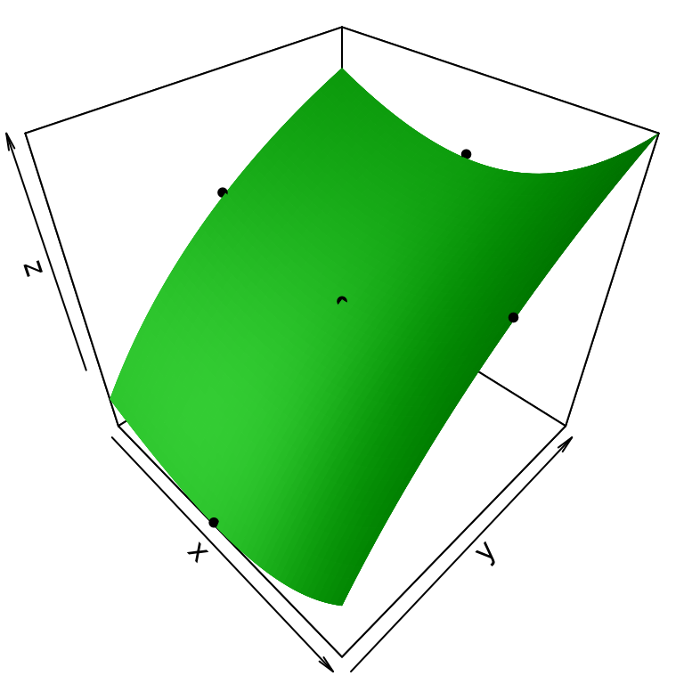
Figure 4: Hyperbolic 2d function
Special cases
There are some special cases, corresponding to data which can not be fitted with the function form in equation (11). More specifically, some of the denominators in equations (14) and (15) can vanish. We take the monotonic case first. Monotonicity means that \(v_i^-\) and \(v_i^+\) have opposite signs, but what if they are equal? The formula for \(c_i\) breaks down. But this is trivial, in this case we have a completely flat function with \(v_i^- = v_i^+ = 0\), and \(b_i = d_i = 0\), with \(c_i\) irrelevant.
The other special case in the monotonicity formulae is when \(k_i^- v_i^+ = k_i^+ v_i^-\). In this case, the points are on a straight line with derivative \(v_i^+/k_i^+ = v_i^-/k_i^-\), we take \(b_i = v_i^+/k_i^+\), \(c_i = d_i = 0\).
Then to the non-monotonic special cases. The first case is when the formula for \(c_i\) breaks down, this is linearity and is defined as monotonic and handled there. The case where \(b_i\) and \(d_i\) are ill-defined is more complicated, it happens when \((k_i^-)^2 v_i^+ = (k_i^+)^2 v_i^-\). The three points lie on a parabola with its vertex in 0. We are unable to fit our function to these points, instead we choose a parabola, i.e. \(\frac{v_i^+}{(k_i^+)^2} x_i^2\). For the purpose of computing \(a\) from equation (12), we use \(d_i = 0\).
The last problem could be that the pole \(x^*=-1/c_i\) is in the interior, i.e. that \(k_i^- < x^* < k_i^+\). This would be devastating for an interpolation as we would tend to infinity close to this \(x^*\). An algebraic excursion convinces us that this can’t happen. However, the pole may lie outside the interval, arbitrarily close to one of the end points. It will then be attenuated by our blending function. It typically happens when \(v_i^- \approx 0 \neq v_i^+\), i.e. a flat area. When implementing this we must be a little bit careful as such a pole easily will create instability when approaching an expression of the form \(0\times\infty\). The same goes for the other special cases.
Blending
Our functions are defined around each grid point in such a way that they agree with the given values on a “cross”. They do not agree in the corners. E.g. for two-dimensional data an \(f\) living in \((0,0)\) agree with the given values in \((0,0), (0,1), (1,0), (0,-1)\) and \((-1,0)\), but not in \((1,1), (1,-1), (-1,1)\) and \((-1,-1)\). This can be imagined in Figure 4. There are of course some values in the corners of the green carpet, and they do not necessarily agree with the given points which are not drawn. Those points belong to neighbouring basis functions.
When interpolating a point, there is a function living in each corner around it, but how should they be weighted?
The simplest method is to use the barycentric coordinates of our point, i.e. the weight for a corner is the volume of the hypercube opposite the point. Alternatively, these weights can be modified by some sigmoid function. An illustration can be found in Figure 5. We have a point in \((0.3,0.4)\), there are functions living in each corner, the black dots. The weight for the function in \((1,1)\) is the area of the lower blue rectangle \(0.3 \times 0.4 = 0.12\).
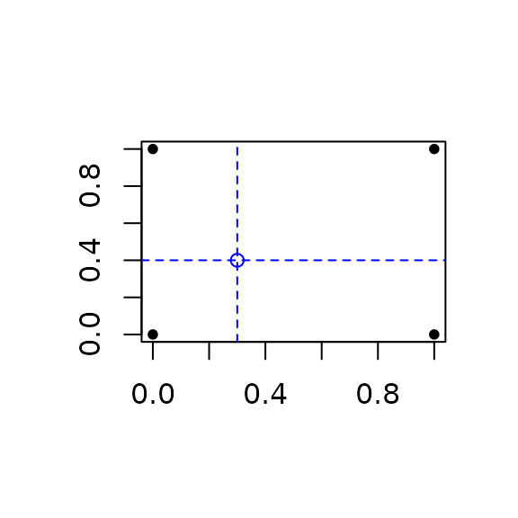
Figure 5: Blending
This will ensure continuity, but it will not ensure differentiability even in simple examples, due to the fact that the function living in \((1,1)\) has a value in \((0,0)\) which is different from the given value in \((0,0)\). Therefore, the hyperbolic stalker is by default blended with a cubic in each dimension. I.e. the weight above will be \(s(0.3) \times s(0.4)\), where \(s\) is the blending function. Note that the blending does not introduce non-monotonicity where there is none, nor overshoot in the non-monotonic case, but we may still see a small amount of such shape disturbance due to the design of the bases. We have no absolute guarantee that overshoot will not occur on the diagonal of the crosses. In some cases, additional local extrema can also be introduced.
In Figure 6, we have some random values on a uniform 4x4 grid. For illustration purposes we use a “mean” blender , i.e. at every point we compute the mean of the basis functions living there. The resulting interpolant is discontinuous, and we miss the given points, it’s not actually interpolating. The same thing would happen in our first example with the piecewise linear interpolation, we could not use a “mean” blender there. In order to have reasonably smooth transitions we must blend them more properly, when approaching a point we must gradually switch to the basis function living there. Linear barycentric blending creates a continuous interpolation, but it is not differentiable on the grid lines. This can be seen as striped artifacts along the grid lines. The cubic blender creates a smooth surface. The square blender is included as a way to discern what the individual basis functions look like. Halfway between two points, the surface jumps to the other basis function.
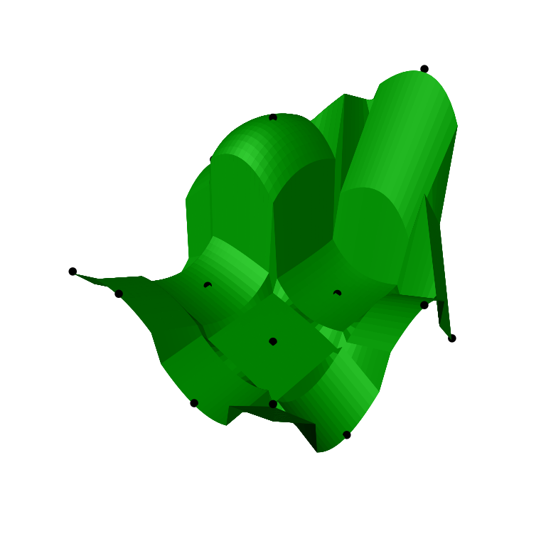
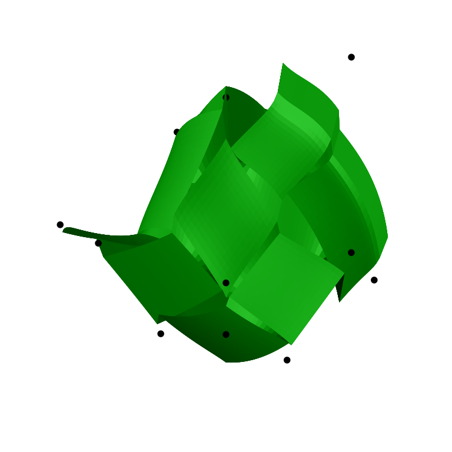
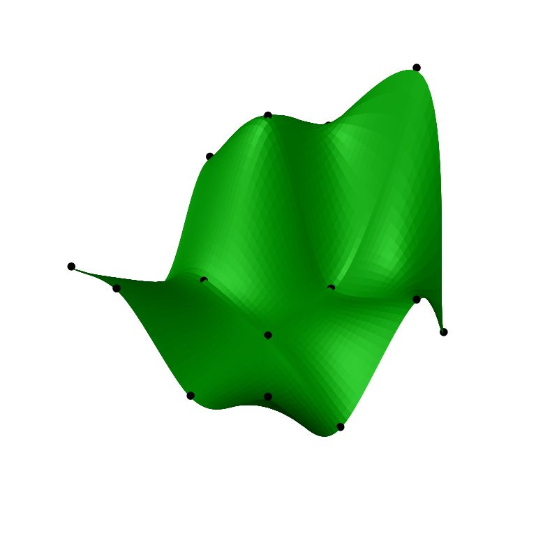
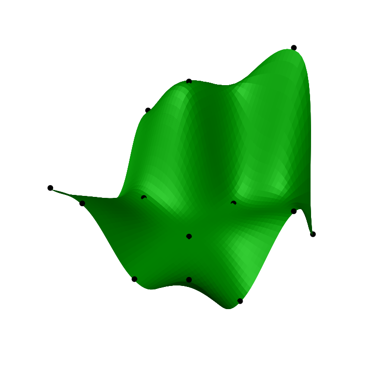
Figure 6: 2d blending (top left: square, top right: mean, bottom left: linear, bottom right: cubic)
In Figure 6 we can imagine that we preserve monotonicity and local extrema, but only parallel with the axes. At the top of the cubic surface the three visible points are monotonic, but the monotonicity is not preserved by the surface. That’s because those three points do not lie on the same grid line, it’s a diagonal pattern like a knight on a chess board, points \((2,0)\) and \((2,1)\), but \((3,2)\), not \((2,2)\) (with \((0,0)\) to the left).
Simplex stalker
Here is an idea which has not yet been worked out and implemented in chebpol. A weakness with the above stalkers is that they only preserve features along the axes. The resulting interpolation will typically have rectangular features along the grid lines. It might be possible to define similar splines on a Delaunay triangulation. I.e. given some knots (not necessarily organized as a Cartesian grid), one can find its Delaunay triangulation. In a given knot \(k\) we consider all pairs of simplices with the knot as a vertex. For each such simplex pair \(S_1, S_2\) we consider triplets of points \(s_1, k, s_2\) with \(s_1\) a vertex in \(S_1\), and \(s_2\) a vertex in \(S_2\). We can then find a basis function on these three points in much the same way as we find basis functions along the axes in the grid stalker. We need some local coordinates which vanish on the other triplets. We can then interpolate a point in a simplex by weighing the surrounding basis functions. In this way we can consider monotonicity and local extrema in all directions in the Delaunay triangulation. Though, exactly what will be preserved by such a concoction escapes my topological intuition. It might be stretching the idea too far.
Examples
In this section we compare the stalker spline to the
"natural" and "monoH.FC" spline from
stats::splinefun. We also illustrate the hyperbolic stalker
spline with a cubic blender. With the hyperbolic stalker, the linear
blender is not able to smooth out the pole in the flat case, whereas the
cubic is. The sigmoid blender will smooth out any non-essential
singularity, but the resulting curve may not be very pleasant. Plotting
the derivative of these interpolants is not for the faint-hearted.
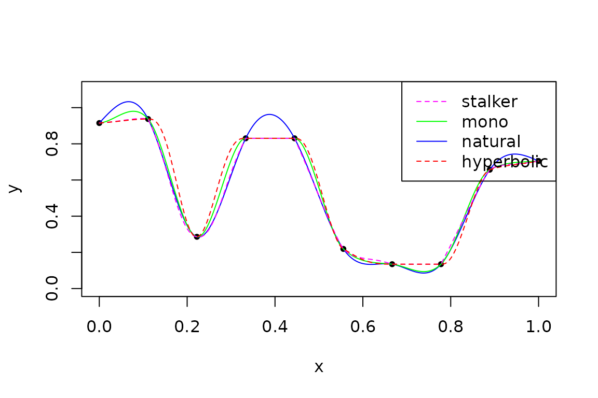
Note that both the stalker and the "monoH.FC" spline
honours the completely flat region between points 4 and 5, but between
points 7 and 8 "monoH.FC" has considerable overshoot, even
though the points are very close. The reason is that point 8 is slightly
lower than point 7, so that points 7-10 are not monotonic, and then the
spline there abandons its monotonicity constraint entirely.
Mathematically, the stalker spline is differentiable except in points 4
and 5, even though it looks like a sharp corner in point 8 due to a very
large second derivative.
We also illustrate the same splines on a monotonic set of points. If all the knots are monotonic, the Fritsch-Carlson spline is superb, it ensures monotonicity and differentiability. The stalker spline does not in case there are completely flat regions, then differentiability is abandoned.
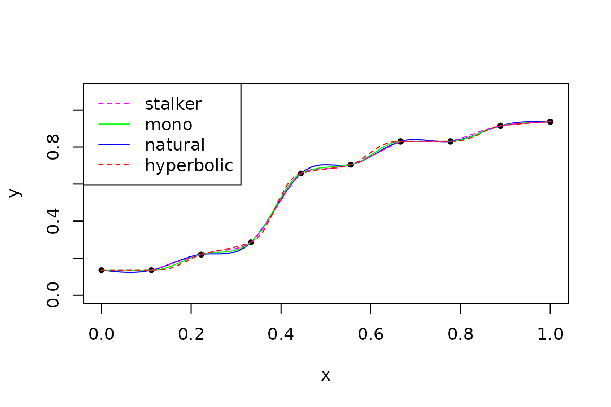
An interesting case is when the knots are pairwise constant. The
stalker spline reduces to a piecewise linear interpolation. The knots
below are not exactly pairwise constant, they differ by \(10^{-16}\). This is sufficient to make
"monoH.FC" overshoot.
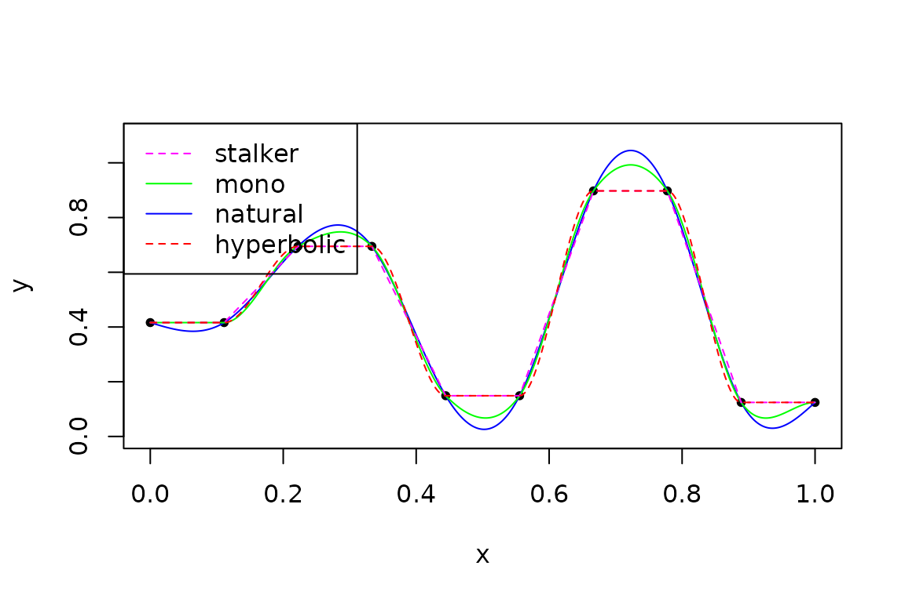
Higher dimensions
We take a look at 2d-interpolation, first the Maungawhau volcano with exaggerated height in Figure 7. It is quite nice with the stalker interpolation.
data(volcano)
volc <- volcano[seq(1, nrow(volcano), 3), seq(1, ncol(volcano), 3)] / 10 #low res volcano
grid <- list(x = as.numeric(seq_len(nrow(volc))), y = as.numeric(seq_len(ncol(volc))))
ph <- ipol(volc, grid = grid, method = "polyharmonic", k = 2)
st <- ipol(volc, grid = grid, method = "stalker")
ml <- ipol(volc, grid = grid, method = "multilinear")
g <- list(x = seq(1, nrow(volc), len = 50), y = seq(1, ncol(volc), len = 50))
par(mar = rep(0, 4))
col <- "green"
light <- list(specular = 0.1, ambient = 0.0, diffuse = 0.6)
plot3D::persp3D(
grid$x,
grid$y,
volc,
colvar = NULL,
lighting = light,
theta = 45,
ltheta = 0,
lphi = 40,
col = col,
axes = FALSE,
bty = "n",
scale = FALSE
)
for (f in list(ml, st, ph)) {
plot3D::persp3D(
g$x,
g$y,
evalongridV(f, grid = g),
colvar = NULL,
lighting = light,
theta = 45,
ltheta = 0,
lphi = 40,
col = col,
axes = FALSE,
bty = "n",
scale = FALSE
)
}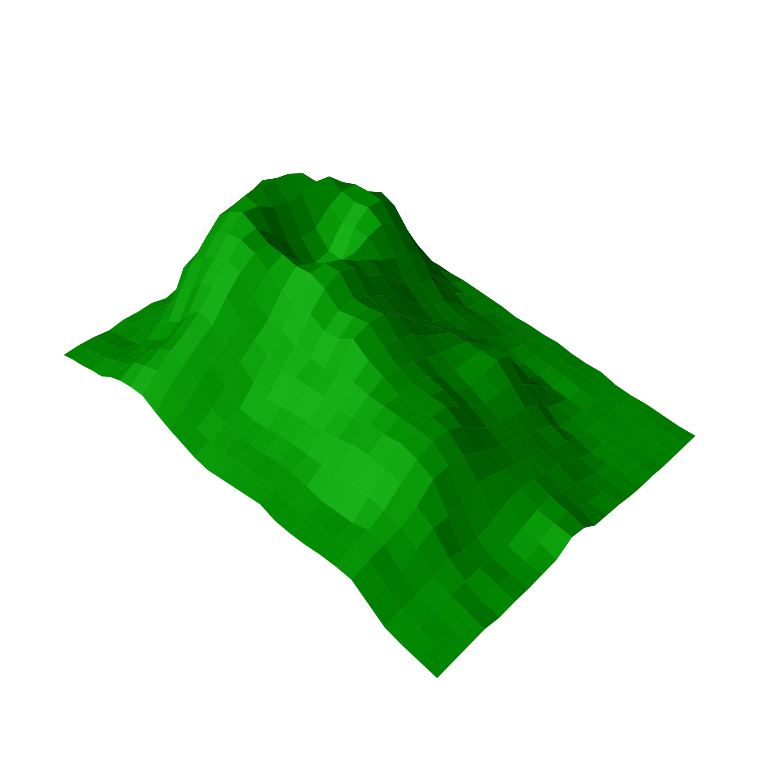
Figure 7: Maungawhau (top left: low resolution, top right: multilinear, bottom left: stalker, bottom right: thin plate spline)
Then we interpolate some random points in Figure 8. There is no
“correct” way to do this, different interpolators have different ways to
render a surface between the points. There is no advanced shading in
plot3D::persp3D, so the resolution can be seen if you zoom
in. Higher resolution would violate space constraints for packages on
CRAN.
set.seed(52)
N <- 8
grid <- list(
x = seq(0, 1, length = N) + c(0, rnorm(N - 2, sd = 0.3 / N), 0),
y = seq(0, 1, length = N) + c(0, rnorm(N - 2, sd = 0.3 / N), 0)
)
val <- matrix(runif(N * N, 0, 0.4), N)
st <- ipol(val, grid = grid, method = "stalker")
ph <- ipol(val, grid = grid, method = "polyharmonic", k = 2)
fh <- ipol(val, grid = grid, method = "fh", k = 0)
hst <- ipol(val, grid = grid, method = "hstalker")
g <- list(x = seq(0, 1, len = 50), y = seq(0, 1, len = 50))
for (f in list(st, ph, hst, fh)) {
par(mar = rep(0, 4))
plot3D::persp3D(
g$x,
g$y,
evalongridV(f, grid = g),
colvar = NULL,
lighting = light,
phi = 60,
theta = 210,
ltheta = 225,
lphi = 45,
col = "green",
axes = FALSE,
bty = "n",
scale = FALSE,
zlim = c(0, 1)
)
pts <- evalongridV(f, grid = grid) + 0.00
plot3D::points3D(rep(grid$x, N), rep(grid$y, each = N), pts, add = TRUE, colvar = NULL, pch = 20)
}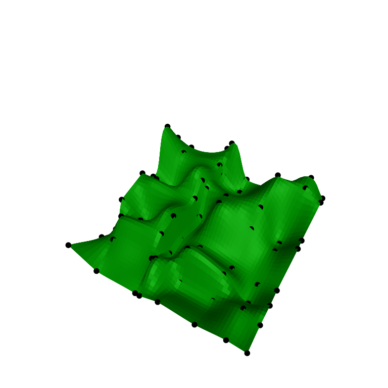
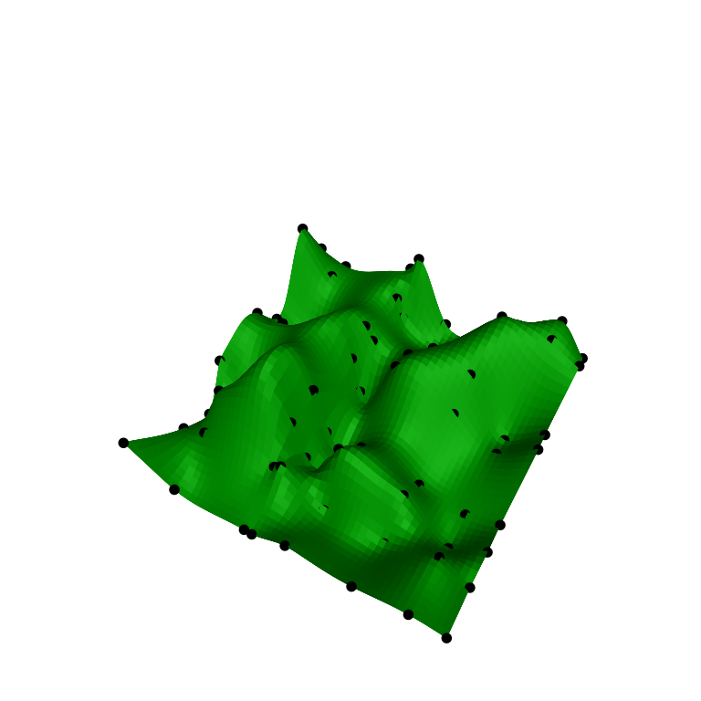
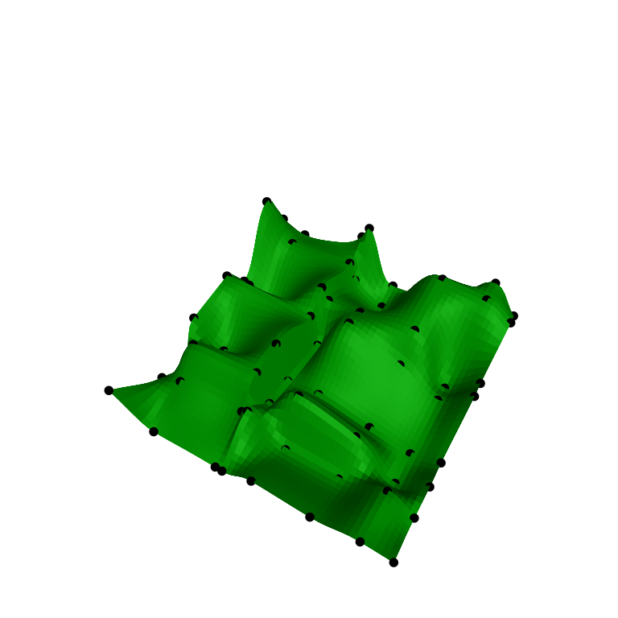
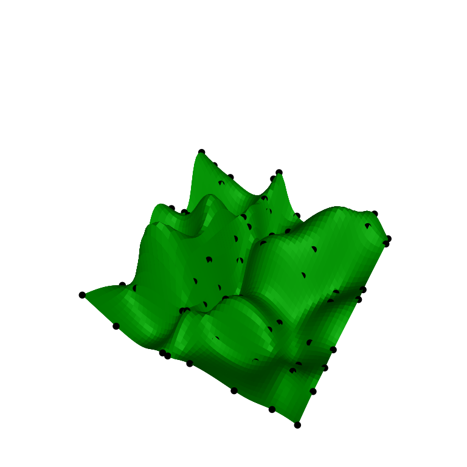
Figure 8: Random surface (top left: stalker, top right: thin plate spline, bottom left: hyperbolic stalker, bottom right: Floater-Hormann)
Summary
The stalker spline is created and used with
st <- ipol(val, grid = grid, method = "stalker")
st(x, blend = "linear")Alternatively, one may create a hyperbolic stalker as
st <- ipol(val, grid = grid, method = "hstalker")Creation of the varying degree stalker on a non-uniform grid currently involves solving a non-linear equation for each grid point numerically, so this is slower than on a uniform grid.
Ordinarily, basis functions are combined with a cubic function.
I.e. when we approach a grid point more and more of the basis function
living there is weighted in. This can be changed at evaluation time, it
can be done “faster” with a sigmoid map, i.e. so that near a grid point,
the neighbouring basis functions are not used at all. Use
blend = "sigmoid" or blend = "cubic" to choose
between two such sigmoid maps, blend = "linear" uses a
linear map, but this can create blocking artefacts in higher dimensions.
It is also possible to specify blend = "square", this is a
discontinuous blender which near a knot will use the basis living there
without blending with the nearby bases. I see no use for this other than
educational.